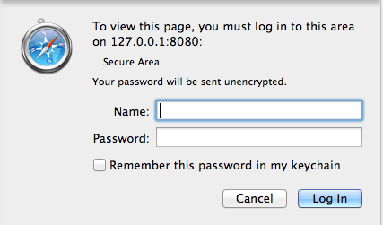
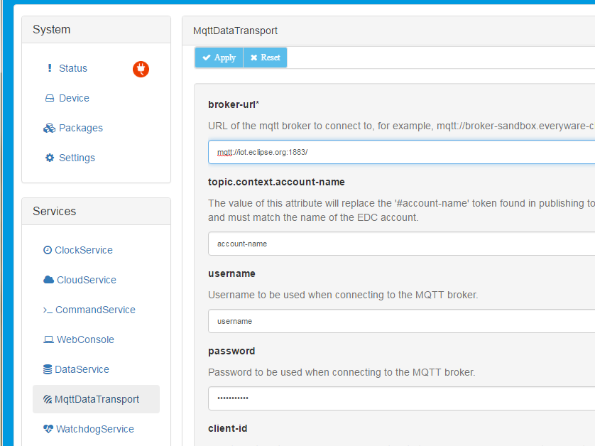
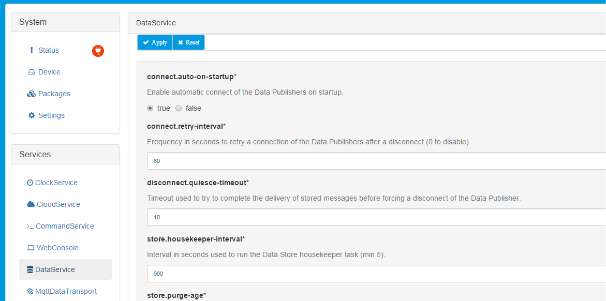
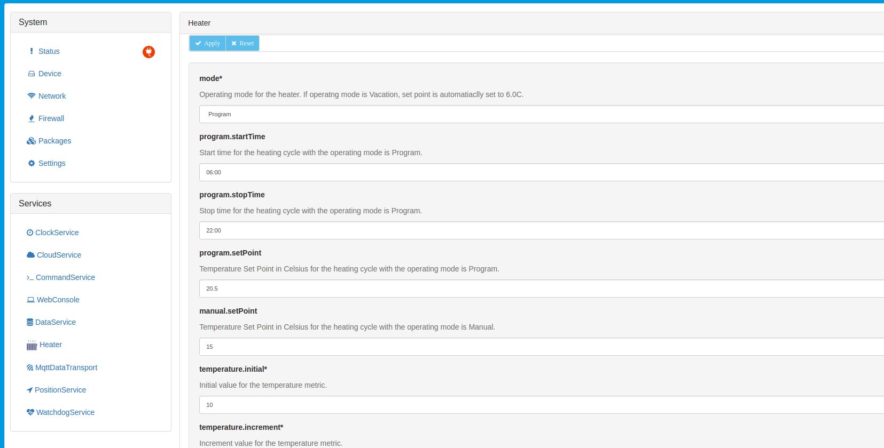

Publishing Application
Heater Demo Introduction
The org.eclipse.iote.demo.heater bundle is a simple OSGi bundle that represents a thermostat and heater combination. The application utilizes the IoT-e ConfigurableComponent interface to be able to receive configuration updates through the local IoT-e web UI. In addition, this bundle utilizes OSGi declarative services and the IoT-e CloudClientListener. This tutorial demonstrates how to modify configurations of custom bundles and shows how those configuration changes can dynamically impact the behavior of the bundle through the IoT-e web UI.
Code Walkthrough
The following sections will highlight three important API layers when creating an application that will publish to the cloud. These layers are:
- DataTransportService
- Available for standard MQTT messaging. Allows consumers of the service to connect to brokers, publish messages, and receive messages on subscribed topics
- DataService
- Delegates data transport to the DataTransportService
- Provides extended features for managing broker connections, buffering of published messages, and priority based delivery of messages
- CloudService
- Further extends the functionality of DataService
- Provides means for more complex flows (i.e. request/response)
- Manages single broker connection across multiple applications
- Provides payload data model with encoding/decoding serializers
- Publishes life cycle manages for devices and applications
Acquiring CloudClient
The CloudService can manage multiple applications over a shared MQTT connection by treating each application as a client. The example code uses the “setCloudService” and “unsetCloudService” methods for referencing and releasing the CloudService. In the bundles activate method, the service reference in conjunction with a unique application ID can then be used to obtain a CloudClient. The relevant code is shown below (ommitted sections are denoted by ==OMMITTED==):
==OMMITTED==
// Cloud Application identifier
private static final String APP_ID = "heater";
==OMMITTED==
public void setCloudService(CloudService cloudService) {
m_cloudService = cloudService;
}
public void unsetCloudService(CloudService cloudService) {
m_cloudService = null;
}
==OMMITTED==
// Acquire a Cloud Application Client for this Application
s_logger.info("Getting CloudClient for {}...", APP_ID);
m_cloudClient = m_cloudService.newCloudClient(APP_ID);
Publishing/Subscribing
The private “doPublish” method is used to publish messages at a fixed rate. The method demonstrates how to use the CloudClient and iotePayload to publish MQTT messages.
==OMMITTED==
// Allocate a new payload
iotePayload payload = new iotePayload();
// Timestamp the message
payload.setTimestamp(new Date());
// Add the temperature as a metric to the payload
payload.addMetric("temperatureInternal", m_temperature);
payload.addMetric("temperatureExternal", 5.0F);
payload.addMetric("temperatureExhaust", 30.0F);
int code = m_random.nextInt();
if ((m_random.nextInt() % 5) == 0) {
payload.addMetric("errorCode", code);
}
else {
payload.addMetric("errorCode", 0);
}
// Publish the message
try {
m_cloudClient.publish(topic, payload, qos, retain);
s_logger.info("Published to {} message: {}", topic, payload);
}
catch (Exception e) {
s_logger.error("Cannot publish topic: "+topic, e);
}
Similarly, the CloudClient can be used to subscribe to MQTT topics. Although not shown in the example code, the following snippet could be added to subscribe to all published messages:
m_cloudClient.subscribe(topic, qos);
Callback Methods
The example class implements CloudClientListener, which provides methods for several common callback methods. The below snippet shows the relevant code for creating the listeners for the demo application.
==OMMITTED==
public class Heater implements ConfigurableComponent, CloudClientListener
==OMMITTED==
m_cloudClient.addCloudClientListener(this);
The available methods for implementation are:
- onControlMessageArrived: Method called when a control message is received from the broker.
- onMessageArrived: Method called when a data message is received from the broker.
- onConnectionLost: Method called when the client has lost connection with the broker.
- onConnectionEstablished: Method called when the client establishes a connection with the broker.
- onMessageConfirmed: Method called when a published message has been fully acknowledged by the broker (not applicable for qos 0 messages).
- onMessagePublished: Method called when a message has been transfered from the publishing queue to the DataTransportService.
Configure the MQTT Client
With the heater demo bundle running, open a browser window on the same computer as the Eclipse development environment and browse to the IoT-e web UI at http://127.0.0.1:8080. Once connected to the IoT-e web UI, a log in window appears prompting you to enter the Name and Password as shown below:

Enter the appropriate name and password (default is admin/admin) and click Log in. The IoT-e Admin web UI appears as shown below:

From the IoT-e web UI, click on MqttDataTransport in the Services pane on the lower left of the browser window. You will see a menu similar to the one shown in the following screen capture:

Fill in the following fields then click the Apply button:
| Field | Value |
|---|---|
| broker-url: | The url for the MQTT broker (this example shows the MQTT broker-url mqtt://iot.eclipse.org:1883/ hosted by the Eclipse Foundation) |
| topic.context.account-name: | Your [account_name] |
| username: | Typically [account_name]_broker |
| password: | The password for your user |
| client-id | The client identifier to be used when connecting to the MQTT broker (optional) |
Now that the account credentials are set in the MqttDataTransport
service, the DataService needs to be configured to connect by default.
To do so, click DataService in the Services area on the left of the
browser window. For the ‘connect.auto-on-startup’ parameter, select
true as shown below:

Modify Bundle Configuration in Local Web UI
Bundles changes may be made directly in the emulator web UI. Since you are running an emulated device in Eclipse, you can do this by browsing to http://127.0.0.1:8080 (same URL where the MQTT client was configured in the previous section of this tutorial). If the bundle was running on a real device and you had network access to it, you would browse to http://[ip_address_of_device].
From the IoT-e web UI, select the Heater bundle from the configurable services on the left and modify the parameters as needed (shown in the screen capture below). By default, the heater demo is configured according to the following characteristics and assumptions about its operational environment:
-
Start operation is at 6:00am (06:00).
-
End operation is at 10:00pm (22:00).
-
It is colder outside than inside the heated chamber (hard-coded to 5 degrees in the application).
-
Output of the heater is constant at 30 degrees (hard-coded).
-
When in operational mode, the temperature will drop inside if the heater is off.
-
The heater turns off when it is about to exceed the setPoint defined in the configuration.
-
After the temperature drops to four times the increment point (a made-up value to show dropping temperature, hard-coded in the application), the heater turns back on, and the temperature starts increment at the rate of the ‘temperature.increment’ rate.

Click Apply for changes to take affect. The updated() method is called after settings are applied for the new configuration.
After completing this tutorial, it is highly recommended that you review the heater demo source code in Eclipse to see how it is put together. IoT-e automatically generates the user configuration interface through implementation of the ConfigurableComponent interface and some small additions to the component.xml file (called heater.xml). This powerful feature provides both a local and remote configuration user interface with no additional development requirements.